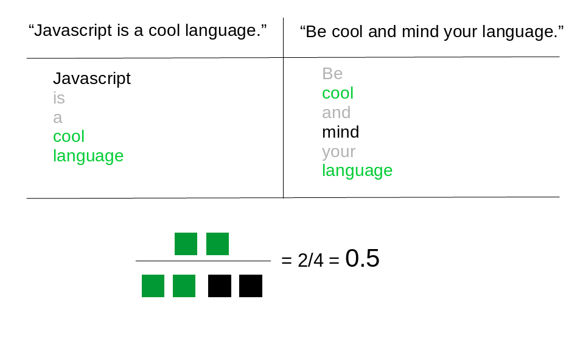

Machine Learning
- What is useful for
- How to integrate
- Available plugins
- A little code
Applications
(mostly for text)
- Anti-spam
- Post recommendation
- Post classification
- Text analysis
- Speech recognition
- A/B testing
- User login?
Available plugins
Integration
- As a native plugin
- As a wrapper for external services
Native
- Everything inside your installation
- Total control
- No PHP machine learning libraries
- Training in PHP is slow
External
- Performance
- No stress
- Pay
Algorithm
Jaccard/Tanimoto index

Algorithm
Jaccard/Tanimoto index
COMPUTE SIMILARITY AT POST SAVE
Similarity graph

INSERT SIMILARITY AS A POST META